Network
Table of Contents
- 1. Physical Layer
- 2. Data Link Layer
- 3. Error Detection
- 4. Error Correction
- 5. Medium Access Control Sublayer
- 6. Network Layer
- 7. Routing
- 8. Transport Layer
- 9. Application Layer
- 10. Devices
1 Physical Layer
Concerns how signals are used to transfer message bits over a link.
1.1 Latency
Message Latency is the delay to send a message over a link.
1.1.1 Transmission Delay
Time to put M-bit message "on the wire" \[T-delay = \frac{M(bits)}{Rate(bits/sec)} = \frac{M}{R}\ seconds\]
1.1.2 Propagation Delay
Time for bits to propagate across the wire \[P-delay = \frac{Length}{speed\ of\ signals} \approx \frac{Length}{\frac{2}{3}C} = D\ seconds\] C is the speed of light. In copper wire, the speed s generally ranges from .59c to .77c
1.1.3 summary
\[L = \frac{M}{R} + D\] Often one delay component dominates.
1.1.4 Bandwidth-Delay
BD is the maxmium amount of data in flight. Reperesents the data "in the network". \[BD = R\times D\] Small for LANs, big for "long fat" pipes(LFN "elephen").
- An important example of a system where the bandwidth-delay product is large is that of geostationary satellite connections
- TCP related option: TCP window scale option
1.2 Media
Media propagate signals that carry bits of information
1.2.1 Wires
Twisted Pair
Widely used in LANs and telephone lines. Twist reduce radiated signal.
- Coaxial Cable
1.2.2 Fiber
Long, thin, pure strands of glass. Properties: Enormous bandwidth
1.2.3 Wireless
Sender radiates signal over a region. Properties:
- In many directions, to potentially many receivers
- Receiver need to coordinate use(choose a sender)
1.3 Signal
Analog signals encode digital bits.
1.3.1 Frequency Representation
A signal over time can be represented by its frequency components.(Fourier analysis) \[g(t)=\frac{1}{2}c+\sum_{n=1}^\infty a_n sin(2\pi nft) + \sum b_n cos(2\pi nft)\]
1.4 Modulation
1.4.1 NRZ(Non-Return to Zero)
Let a high voltage(+V) represent a 1, and low voltage(-V)represent a 0.
1.4.2 Passband
Carriers is simply a signal oscillatiog at a desired frequency. To modulate these signal, we can change amplitude, frequency, or phase.
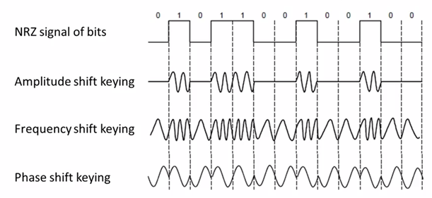
Figure 1: Modulations
- more signal levels
eg: voltage splits into four levels. reperents 2bits per symbol.
- Clock Recovery
Clock recovery is designed for the case like 1000000000…0
1.5 Limit
1.5.1 Nyquist Limit
\[Maximum\ data\ rate = 2Hlog_{2}V\ bits/sec\]
- V is the discrete levels the signal consists.
- H is the bandwidth
1.5.2 Shannon Capacity
\[Maximum\ data\ rate = Hlog_{2}(1+S/N)\ bits/sec\]
- S/N is the signal-to-noise ratio, S is the signal power, N is the noise power.
- S/N in db unit \(=10log_{10}(S/N)\)
1.6 Other Hints
1.6.1 Metric Units
Use power of 10 for rates, 2 for storage. \[Mbps=1,000,000bps, 1KB = 2^{10}bytes\] "B" is for bytes, "b" is for bits
1.6.2 BandWidth
The range of frequencies transmitted without being strongly attenuated is called the bandwidth
2 Data Link Layer
2.1 Frame
| FLAG | Header | Payload field | Trailer | FLAG |
2.1.1 PPP(Point-to-Point Protocol)
| FLAG(0x7E) | Address(0xFF) | Control(0x03) | Protocol ID(2-byte) | Payload | Frame Check Sequence(3-byte) | FLAG |
- MRU(maximum receive unit): 1500 bytes(Payload part)
- ESC(escape character) is 0x7D
2.1.2 CSMA/CD(Broadcast Protocol)
3 Error Detection
3.1 Terms
3.1.1 Codeword
check bits of n-bit data is often referred to as an n-bit codeword.
3.1.2 Hamming distance
The number of bit positions in which two codewords differ is called the Hamming distance. eg: The hamming distance between 1011101 and 1001001 is 2
- To detect d errors, we need d+1 distance.
- To correct d errors, we need 2d+1 distance.
3.2 Parity Verification
Simple Verification
Take D data bits, add 1 check bit. Check bit is the sum of the D bits module 2.(diff by even sum or odd) Distance: 2 Detect 1 error
3.3 Checksums
3.3.1 Sending
Sum is defined in 1s complement.
- Arrange data in 16-bit words
- Add all
- Add with the carryover back to get 16bits
- Trans to 1s Complement
0001+f203+f4f5+f6f7=2ddf0 ddf0+2=ddf2 ddf2->220d
3.3.2 Receiving
- Arrange data in 16-bit words
- Add all + checksum
- Add any carryover back to get 16bits.
- Negate the result and check if it is 0.
0001+f203+f4f5+f6f7+220d=2fffd fffd+2 = ffff ffff->0
3.3.3 Conclusion
- Distance: 2
- Detect 1 error
3.4 CRC(Cyclic Redundancy Check)
Given n-bit data, generate k check bits such that the n+k bits are evenly divisible by a generator C.
- C(x) use the polynomial code. eg: 10011010 is \(x^7+x^4+x^3+x^1\)
Both the high- and low-order bits of the generator must be 1
3.4.1 Sending
- Extend the n data bits with k zeros
- Divide by the generator value C
- Keep remainder, ignore quotient
- Adjust k check bits by remainder
Frame: 1101011011 Generator: 10011 K: 4 bits 11010110110000 devided by 10011 Reminder: 0010
3.4.2 Receiving
- Divide and check for zero remainder
3.4.3 Conclusion
Protection depends on generator.
Standard CRC-32 is: 1111 0000 0100 1100 0001 0001 1101 1011 0111
- Distance: 4
- Detect 3 errors
3.5 In Practice
- Parity is little used
- Checksum used in Internet: IP, TCP, UDP
- CRCs are widely used on links: Ethernet, 802.11, ADSL, Cable, etc.
4 Error Correction
4.1 Hamming Code
- Uses \(n=2^k-k-1\)
- n: data bits
- k: check bits
eg: n=4, k=3
- Put check bits in positions p that are powers of 2, starting with position 1
- Check bit in position p is parity of positions with a p term in their values
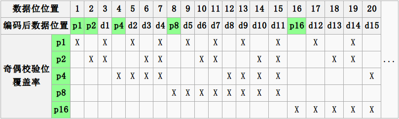
4.1.1 Encoding
data=0101, 3 check bits __0_101 P1=0+1+1=0 P2=0+0+1=1 P4=1+0+1=0 After encoded: 0100101
4.1.2 Decoding
0100101 P1=P1+D3+D5+D7=0+0+1+1=0 P2=P2+D3+D6+D7=1+0+0+1=0 P4=P4+D5+D6+D7=0+1+0+1=0 Syndrome=000, no error 0100111 P1=0, P2=1, P4=1 Syndrome=110->6 The 6th bit is wrong.
4.2 Detection vs. Correction
Error correction:
- Needed when errors are expected
- When no time for retransmission
Error dection:
- More efficient when errors are not expected
- When errors are large when they do occur
5 Medium Access Control Sublayer
5.1 Retransmissions
Detect errors and retransmit frame(Automatic Repeat reQuest, ARQ)
- ARQ often used when errors are common or must be corrected. E.g., WIFI, TCP
- Rules
Receiver automatically confirms with an ACK.
Sender automatically resends after a timeout, until an ACK is received
Two non-trivial issues: Timeouts and Duplicates
5.1.1 Timeouts
Should be
- Not too long (link goes idle)
- Not too short (spurious resend)
5.1.2 Duplicates
Two ways to solve this problem:
- Stop-and-Wait
Add a single bit to distinguish the current frame from the next one(in the head of the frame)
Normal Case
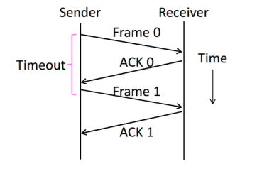
With Ack Loss
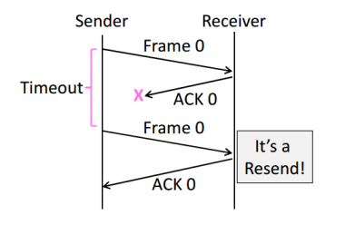
With Early Timeout
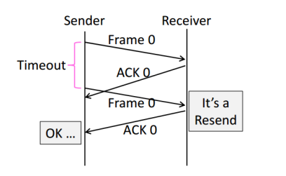
Limitation of Stop-and-Wait
Stop-and-Wait allows only one frame to
be outstanding from the sender at a time.
Not good with high BD networks.
- Sliding Window
Generalization of Stop-and-Wait
- Allow W frams to be outstanding
- Can send W frams per RTT (= 2D + transmission time, Round Trip Time)
- Various options for numbering frams/ACKs and handling loss
5.2 Multiplexing
Multiplexing is the network word for the sharing of a resource.
Time Division Multiplexing (TDM)
Users take turns on a fixed schedule
Frequency Division Multiplexing (FDM)
Put different users on different frequency bands
5.2.1 TDM/FDM Usage
Statically divide a resource
Suited for continuous traffic, fixed
number of users
Widely used in telecommunications
E.g:
TV and radio stations: FDM
GSM (2G cellular): TDM within FDM
5.3 Multiple Access Control
5.3.1 Randomized Multiple Access
- ALOHA
Simple idea:
If there was a collision(no ACK received) then wait
a random time and resend.
- Low load: Works well
High load: Need improvement
Improvement: divide time into slots(transmit frames at the beginnings of slots)
- CSMA(Carrier Sense Multiple Access)
carrier sensing (CSMA)
A node listens to the channel before transmitting.
collision detection (CSMA/CD)
A transmitting node listens to the channel while it is transmitting.
If it detects that another node is transmitting an interfering frame,
it stops transmitting and wait a random amount time before repeating.
Complications
Time window in which a node may hear of a collision is 2D seconds.
Solution: Impose a minimum frame size that last for 2D seconds.
Then, node can't finish before collision.
Note that: Ethernet minimum frame is 64bytes.
Persistence
Multiple waiting nodes will queue up then collide.
Espacially on high load network.
Idea to solve: N queued senders, each send probability 1/N. How to estimate?
In practice: BEB(Binary Exponential Backoff)
Clever estimates the probability:
1st collision, wait 0 to 1 frame times; 2nd, 0 to 3; 3rd, 0 to 7;
BEB doubles interval for each successive collision.
- Summary
- CSMA Improve ALOHA by listening for activity before sending.
- Can do easily with wire.
- Still possible to hear nothing when another node is sending because of delay.
- CSMA is a good defense against collisions only when BD is small
- Classic Ethernet
- 10 Mbps over shared coaxial cable
- 1-persistent CSMA/CD with BEB
Frame Format
- contains addresses of sender and receiver
- CRC-32 for error detection
- No ACKs or retransmission
- Start of frame identified with physical layer preamble
Preamble Dest addr Source addr Type Data(Packet from Network layer) Pad Check-sum 8 6 6 2 0-1500 0-46 4
5.3.2 Wireless Multiple Access
- Complications
Wireless can't work with CSMA/CD
Nodes may have different areas of coverage
May case two problems:
Hidden Terminals
A and C are hidden terminals when sending to B
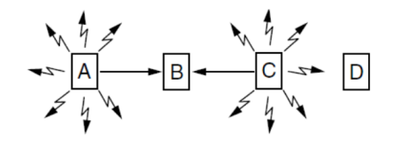
Exposed Terminals
B and C are exposed terminals when sending to A and D
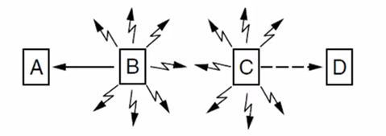
Nodes can't hear while sending
Detecting collisions wasted much time with wireless.
- MACA Protocol
Uses a short handshake instead of CSMA
- Sender transmits a RTS(Request-To-Send) with frame length
- Receiver replies with a CTS(Clear-To-Send) with frame length
- Sender transmits the frame while hearing the CTS stay silent
Solution For Hidden Terminals
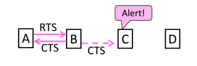
Solution For Exposed Terminals
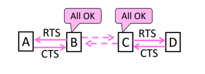
- Collisions on the RTS/CTS are still possible, but less likely
- 802.11
- Physical Layer
- Uses 20/40Mhz, b/g/n on 2.4GHz, a/n on 5GHz
Link Layer
Multiple access uses CSMA/CA; RTS/CTS optional
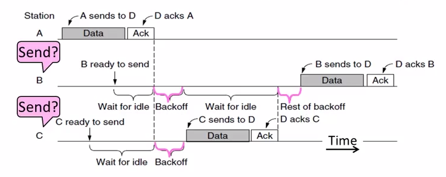
Backoff is a small random gap.
- Frames are ACKed and retransmitted with ARQ
- Three addresses(due to AP)
- Errors are detected with a 32-bit CRC
Frame control Duration Dest addr Source addr AP addr Data Check-sum 2 2 6 6 6 0-2312 4
- Physical Layer
5.3.3 Turn-Taking Multiple Access
Issue about CSMA under high load:
- High overhead(expect collisions)
- Access time varies(random)
Turn-Taking protocol defines an order in which nodes get a chance to send.
The way to define ordering:
E.g Token Ring, node addresses
Token Ring
Arrange nodes in a ring. Token rotates permission to send to each node in turn.
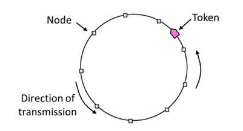
- Advantages:
- Fixed overhead with no collisions
- Regular chance to send with no unlucky nodes
- DisAdvantages(Complexity):
- More things could be wrong. E.g: token lost
- High overhead at low load
5.4 Switching
Hub/repeater for physical layer.
Router for network layer.
Switch for link layer.
Inside Switch Box:
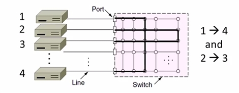
Uses buffers for multiple inputs to send to one output,
may overload, and lead to frame loss.
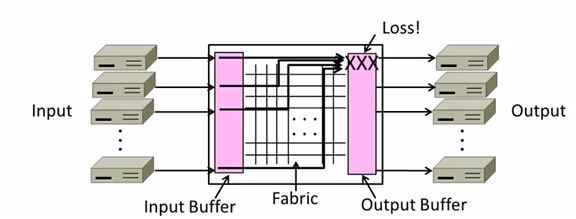
5.4.1 Switch Forwarding
Uses a learning table, sends to the port in the table or broadcasts to all ports.
5.4.2 Switch Spanning Tree
- How can we connect switches in any topology?
Problem - forwarding loops
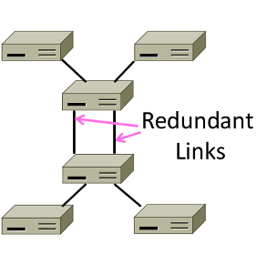
Redundancy in case of failures. But loops occurs:
- \(A\to C\to B, D-left, D-right\)
- \(D-left\to C-right, E, F\)
- \(D-right\to C-left, E, F\)
- \(C-right\to D-left, A, B\)
- \(C-left\to D-right, A, B\)
- …
- Solution
Switches collectively find a spanning tree for the topology
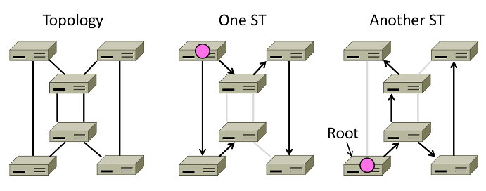
- Outline
- Elect a root node of the tree(switch with the lowest addr)
- Grow tree as shortest distances from the root
- Turn off ports for forwarding if they aren't on the spanning tree
Algorithm
- Each switch initially believes it is the root of the tree
- Each switch sends periodic updates to neighbors
- Switches favors ports with shorter distances to lowest root
Update Information like:
Hi, I'm C, the root is A, it's 2 hops away. (C, A, 2)
- Example:
At the beginning
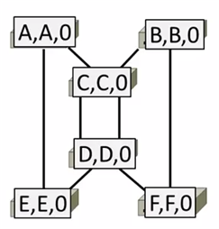
1st round, sending:
A sends (A,A,0) to say it is root. Same as B, C, D, E and F.
1st round, receiving:
A still thinks (A,A,0)
B still thinks (B,B,0)
C updates to (C,A,1)
D updates to (D,C,1)
E updates to (E,A,1)
F updates to (F,B,1)
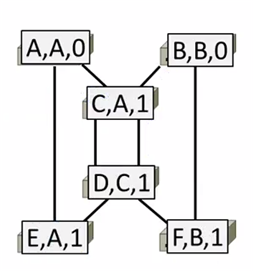
2nd round, receiving:
A still thinks (A,A,0)
B updates to (B,A,2) via C
C remains (C,A,1)
D updates to (D,A,2) via C
E remains (E,A,1)
F remains (F,B,1)
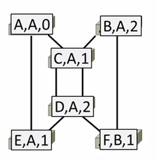
3rd round, receiving:
A remains (A,A,0)
B remains (B,A,2)
C remains (C,A,1)
D remains (D,A,2)
E remains (E,A,1)
F updates to (F,A,3) via B
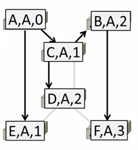
4th round
Steady-state has be reached
Turn off forwarding that is not on spanning tree
Continus to run
Adapts by timeing out information
E.g: If A fails, other nodes forget it, and B will become the new root
- Outline
6 Network Layer
6.1 Service Models
6.1.1 Store-and-Forward
Both of two models use Store-and-Forward packet switching.
Switching element has internal buffering for contention.
- Buffer is typically a FIFO queue
- If full, packets will be discarded
6.1.2 Datagrams(Connectionless)
Like postal letters
- Packets contain a dest. address
Each router has a forwarding table(often changes) keyed by dest addr. Example table:
Table 1: Router A's Table Dest. Line A B B C C D B E C F C
6.1.3 Virtual Circuits(Connection-Oriented)
Like a telephone call. Three steps:
- Connection establishment, circuit is set up (Path is chosen, circuit info stored in routers)
- Data transfer, circuit is used
- Connection teardown, circuit is deleted
- Virtual means there's no bandwidth need be reserved
- Packets only contain a short label to identify the circuit
Each router has a forwarding table keyed by circuit
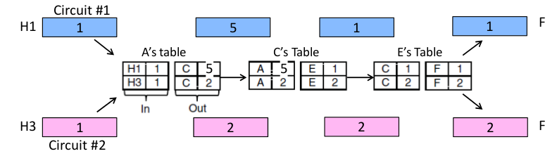
6.1.4 Datagrams vs Virtual Circuits
| Issue | Datagrams | Vitual Circuits |
|---|---|---|
| Setup | Not needed | Required |
| Router state | Per destination | Per connection |
| Addresses | Packet carries full addr | Packet carries short label |
| Routing | Per packet | Per circuit |
| Failures | Easier to mask | Hard to mask |
| Quality of service | Diffcult to add | Easier to add |
6.2 IP(Internet Protocol)
6.2.1 Internetworking
Connecting different networks together called internetworking. Differs:
- Service model(datagrams, VCs)
- Addressing
- QOS(priorities, no priorities)
- Packet sizes
- Security(whether encrypted)
IP is the "narrow waist" of the internet.
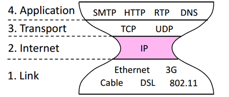
The idea is make IP as a lowest common denominator.
Ask little from lower-layer, gives little to a higher-layer.
6.2.2 IPv4
IPv4 carries 32-bit addresses on each packet(often 1.5KB)
Uses datagrams, you can see Source and Destination addr inside.
The fields to handle the difference of networks:
- Identification, Fragment offset, Fragment control bits for different packet size.
- Differentiated Services for QOS
- Time to live(TTL) for ICMP
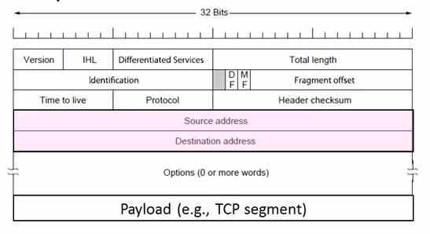
6.2.3 IP Forwarding
Nodes uses a table that lists the next hop for IP prefixes. Example:
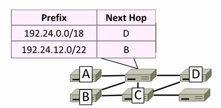
Longest Matching Prefix
Prefixes can overlap!
In example above,
D: 192.24.0~63.0~255
B: 192.24.12~15.0~255
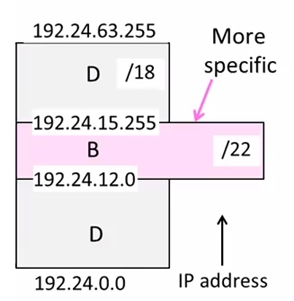
The rule is to more specific area. This rule called Longest Matching Prefix.
Flexibility
provide default behavior, with less specific prefixes.
E.g. send traffic going outside an organization to a border router.
special case behavior, with more specific prefixes.
E.g. For performance, economics, security
Host Forwarding Table
Prefix Next Hop My network prefix Send direct to that IP 0.0.0.0/0 Send to my router - 0.0.0.0/0 is a default route that catches all IP addresses.
6.2.4 Packet Size Issue
Different networks have different maximum packet sizes.
Also known MTU(Maximum Transmission Unit)
Two solutions:
- Fragmentation
Split up large packets in the network-—classic method, dated.
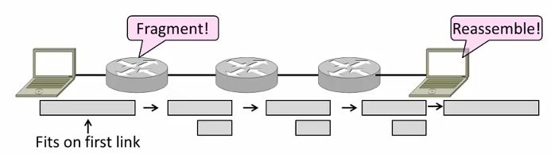
Related fields:
MF=More Fragment
DF=Don't Fragment
identification field links pieces together.
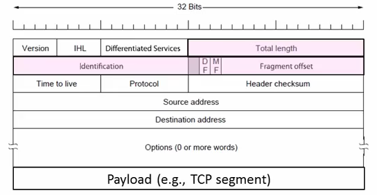
- Procedure
- Copy IP header to pieces
- Adjust length on pieces
- Set offset to indicate position
- Set MF on all pieces except last
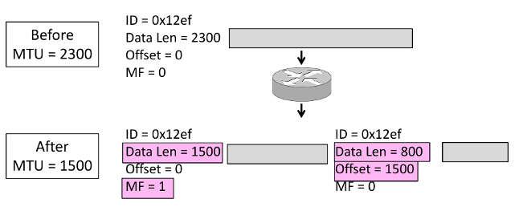
- Disadvantages
- More work for routers, hosts
- Tends to magnify loss rate
- Security vulnerabilities
- Procedure
- Discovery
Find the largest packet that fits on the network path.
Solution Host tests path with large packet.
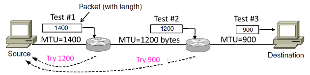
Implemented with ICMP.
Set DF(Don't Fragment) bit in IP header to get feedback messages.
6.2.5 ICMP(Internet Control Message Protocol)
On IP Header: IP Protocol = 1
Provides error report and testing
When router encounters an error while forwarding:
- Sends an ICMP error report back to the IP source address
- Discards the problematic packet(host needs to rectify)
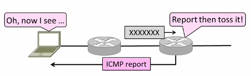
ICMP Message
ICMP message has a type, code, and checksum
Often carry the start of the offending packet as payload
Each message is carried in an IP packet
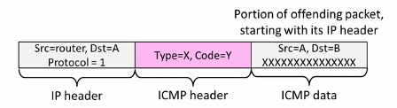
Some examples:
Name Type/Code Usage Dest. Unreachable(Net or Host) 3/ 0or1 Lack of connectivity Dest. Unreachable(Fragment) 3/4 Path MTU Discovery Time Exceeded(Transit) 11/0 Traceroute Echo Request or Reply 8or0 /0 Ping The last two are used for testing.
6.2.6 IPv6
128 bits address
8 groups of 4 hex digits. Omit leading zeros and group of zeros.
Ex: 2001:0db8:0000:0000:0000:ff00:0042:8329
-> 2001:db8:ff:42:8329
Message Format
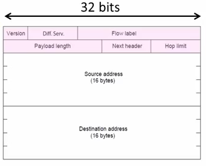
The changes:
- Streamlined header processing
- Flow lable to group of packets
- Better fit with advanced features(mobility, multicasting, security)
Deploy Issue
The format incompatible with IPv4
Solutions:
- Dual stack (speak IPv4 and IPv6)
- Translators (convert packets)
Tunnels (carry IPv6 on IPv4)
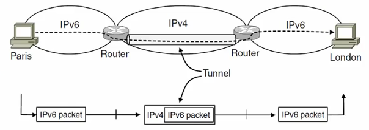
6.3 ARP(Address Resolution Protocol)
Node uses ARP to map a local IP address to its Link layer address
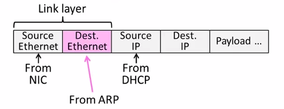
- No servers, just asks node with target IP.
- Uses broadcast to reach all nodes.
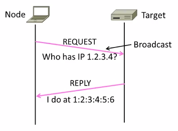
6.4 Traceroute
Uses TTL(Time to live) field in IP header.
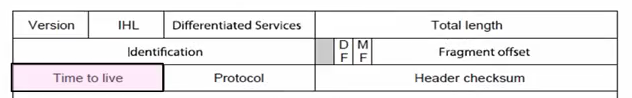
TTL decremented every router hop, with ICMP error if it hits zero.
It also protects against forwarding loops.
Traceroute sends probe packets increasing TTL starting from 1.
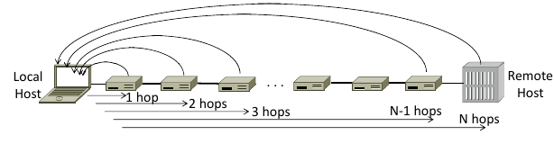
6.5 NAT(Network Address Translation)
NAT is one type of the middle box.
Middle box provides new functionality(NAT, firewall, Intrusion Detection).
NAT holds a table, map internal IP:Port with External IP:Port.
May look like the following table:
| Internal | External |
|---|---|
| 192.168.1.12:5523 | 44.25.80.3:1500 |
| 192.168.1.13:1234 | 44.25.80.3:1501 |
| 192.168.2.20:1234 | 44.25.80.3:1502 |
Internal→ External: looks up the map, changes the src IP:Port.
External→ Internal: changes the dest IP:Port.
- Advantage
- Relieves much public IP address pressure
- Easy to deploy
- Useful functionality(helps with privacy, firewall, etc.)
- Disadvantage
Connectivity has been broken
Can only send packets after outgoing connection is set up.
Difficult to run servers or peer-to-peer apps(Skype) at home.
- Doesn't work so well with UDP
- Unwisely expose their IP addresses(FTP)?
7 Routing
7.1 Distance Vector Routing
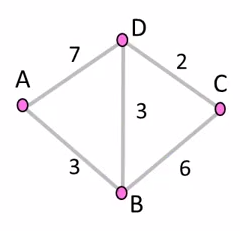
Initial Status
To A B C D A 0 \(\infty\) \(\infty\) \(\infty\) B \(\infty\) 0 \(\infty\) \(\infty\) C \(\infty\) \(\infty\) 0 \(\infty\) D \(\infty\) \(\infty\) \(\infty\) 0 1st Exchange
AC: A Cost
AN: A NextTo
To AC AN BC BN CC CN DC DN A 0 -- 3 A \(\infty\) -- 7 A B 3 B 0 -- 6 B 3 B C \(\infty\) -- 6 C 0 -- 2 C D 7 D 3 D 2 D 0 -- 2nd Exchange
To AC AN BC BN CC CN DC DN A 0 -- 3 A 9 B 6 B B 3 B 0 -- 5 D 3 B C 9 D 5 D 0 -- 2 C D 6 B 3 D 2 D 0 -- final
To AC AN BC BN CC CN DC DN A 0 -- 3 A 8 D 6 B B 3 B 0 -- 5 D 3 B C 8 B 5 D 0 -- 2 C D 6 B 3 D 2 D 0 --
7.1.1 Dynamics
- Adding routes: one hop per exchange
- Removing routes: no more exchanges
Partitions are a problem: "Count to infinity" scenario
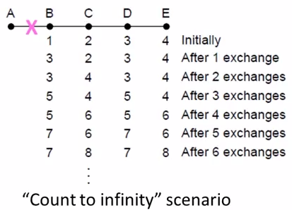
Some way to address: Split horizon, poison reverse.
(Don't send route back to where you learned it from)
There's no very effective way to solve this problem.
And now link state favored in practice.
7.1.2 RIP(Routing Information Protocal)
- DV protocal with hop count as metric
- Infinity is 16 hops; limits network size.
- Include split horizon, poison reverse.
- Routers send vectors every 30 secs
- Runs on top of UDP.
- Timeout in 180 secs to detect failures.
7.2 Flooding
7.2.1 Rule Used at Each Node
- Sends an incoming message on to all other neighbors
Remember the message so that it is only flood once
Using source and sequence number
8 Transport Layer
8.1 TCP vs UDP
| TCP(Streams) | UDP(Datagrams) |
|---|---|
| Connections | Datagrams |
| Reliably, and in order | reordered, duplicated, msg may be lost |
| Arbitrary length content | Limited message size |
| Flow control | Can send regardless of receiver state |
| Congestion control | Can send regardless of network state |
8.2 Well-known Ports
| Port | Protocol | Use |
| 20, 21 | FTP | File transfer |
| 22 | SSH | Remote login |
| 25 | SMTP | |
| 80 | HTTP | World Wide Web |
| 110 | POP-3 | Remote email access |
| 143 | IMAP | Remote email access |
| 443 | HTTPS | Secure Web (HTTP over SSL/TLS) |
| 543 | RTSP | Media player control |
| 631 | IPP | Printer sharing |
8.3 UDP socket
8.3.1 header
- Datagram length up to 64K
- Checksum(16 bits) for reliability
| Source port | Destination |
| UDP length | UDP checksum |
8.3.2 sequence
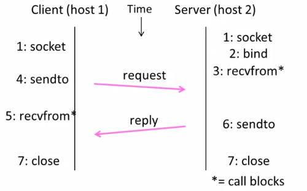
8.4 TCP socket
8.4.1 Three-way handshake
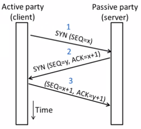
state machine
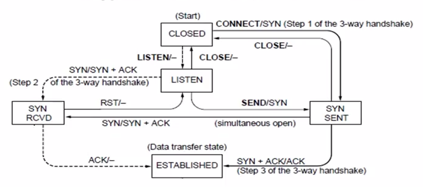
8.4.2 Connection Release
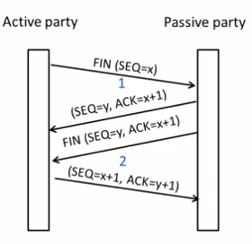
state machine
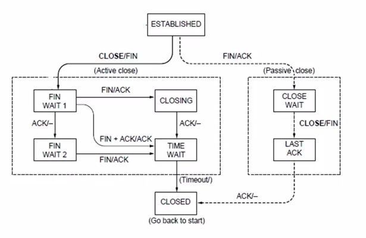
9 Application Layer
9.1 DHCP(Dynamic Host Configuration Protocol)
Provide the following information to Node:
- The node IP
- Network prefix
- Address of local router
- DNS server, time server, etc.
DHCP uses UDP ports 67,68
| DHCP |
| UDP |
| IP |
| Ethernet |
9.1.1 How does node find DHCP server?
Node sends broadcast messages.
broadcast address is all 1s.
255.255.255.255 for IP, ff:ff:ff:ff:ff:ff for Ethernet
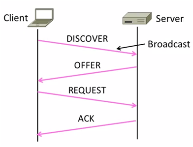
10 Devices
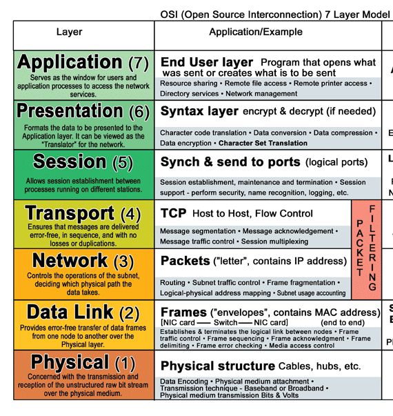
10.1 Hub
- on physical layer. broadcast forwarding
10.2 Switch
- on link layer. use MAC address.
10.3 Router
- on network layer. use IP.